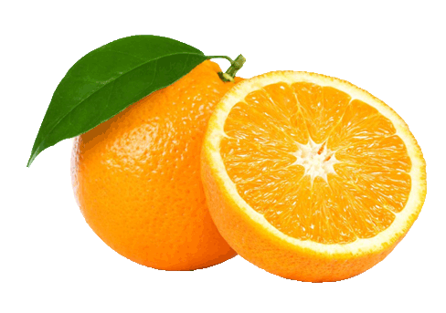
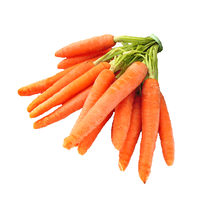
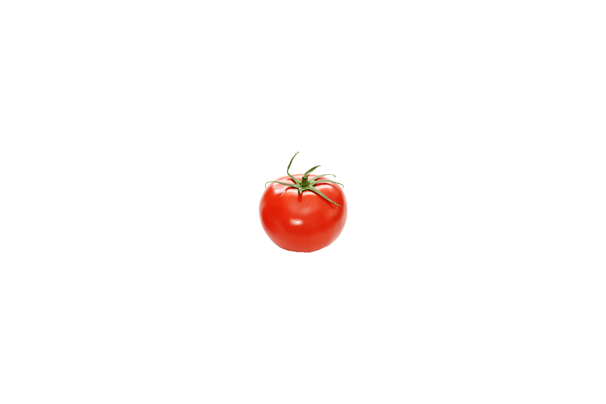
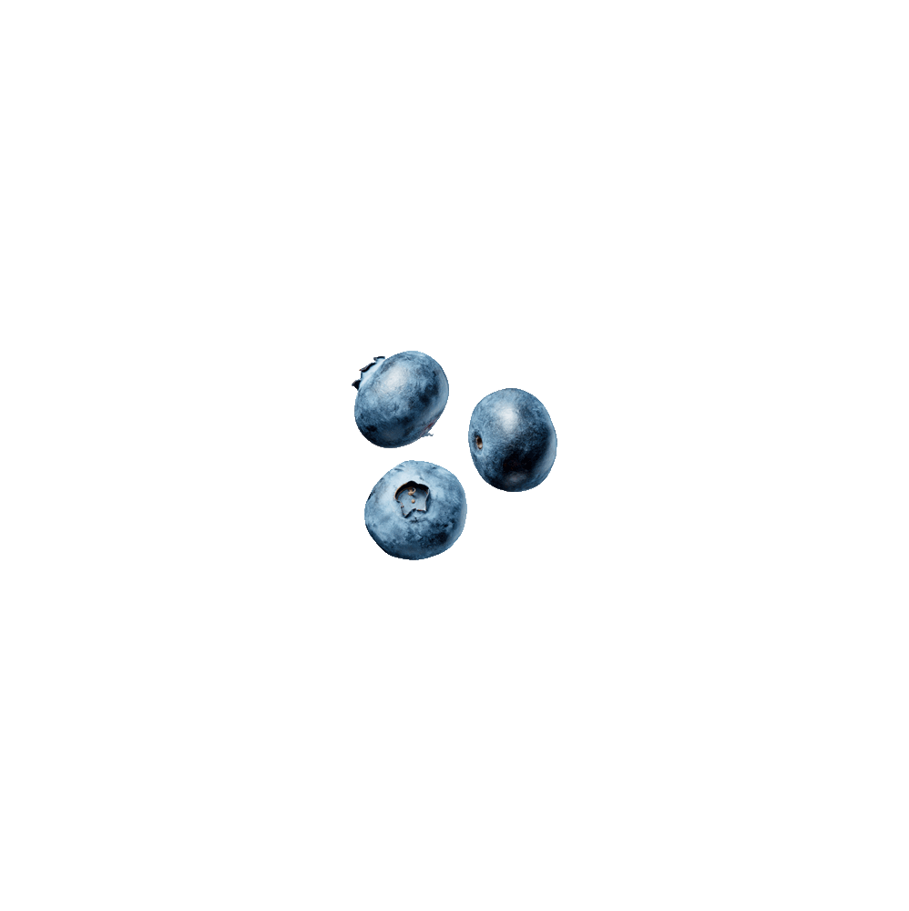
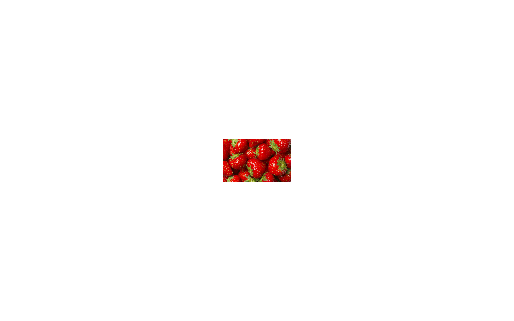
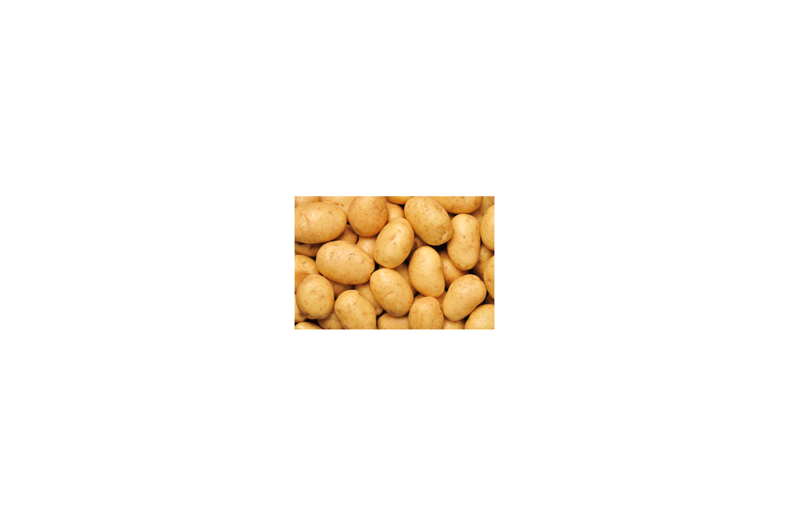
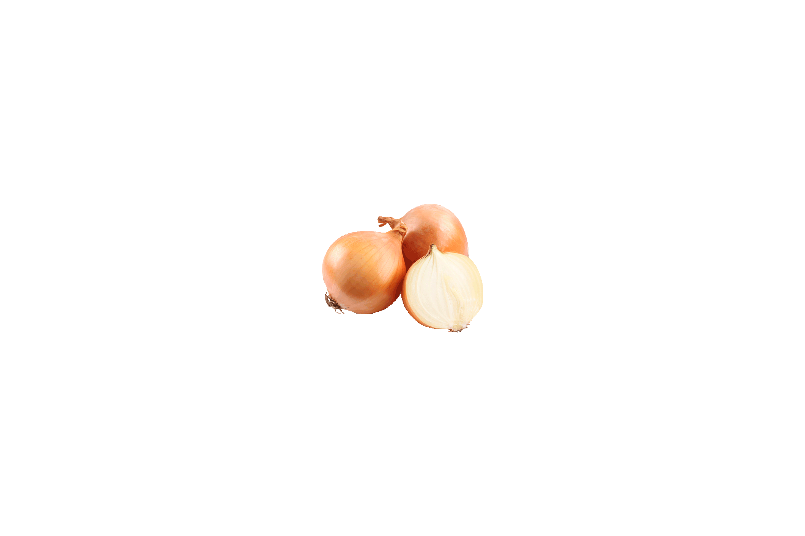

Departments: Produce
The first fruit that Focal Foods sold to customers in 1967 was none other than apples. As
fresh as they are healthy, apples are extremely beneficial for anyone who is a health nut.
Apples are rich in important antioxidants, flavanoids and dietary fiber. Apples have been
proven to reduce the risk of cancer, hypertension, diabetes and heart disease. One last
thing, you must remember to wash apples before you eat them. A bag of apples costs $1.99 alone.

Interesting fact that you should know, Focal Foods orders their oranges straight out of
Florida. As the second most popular fruit sold at Focal Foods, many people have said that
they can't stop buying them. A bag of oranges costs $1.99 alone. You can also use the oranges
to create juice out of them. For all of the health nuts out there, oranges are rich in
vitamin C, dietary fiber, vitamin A, calcium, copper and potassium.

Freshly grown for a healthy diet, the carrots at Focal Foods cost $0.99 each. As many of
you are already aware, carrots improve your eyesight. However, there is much more to it
than that. Carrots contain vitamin A, vitamin C, vitamin K, vitamin B8, folate, potassium,
iron, copper and manganese. If you own a pet rabbit, bring some carrots home for it. I'm
sure that you'll enjoy seeing it happy.

One of two things sold at Focal Foods for the purpose of sandwich making, tomatoes are
a favorite among our customers. A bag of tomatoes costs $2.99 alone. For those who are not
aware, tomatoes contain vitamin C, biotin, molybdenum, vitamin K, copper, potassium,
manganese, dietary fiber, vitamin A, vitamin B6, folate, niacin, vitamin E and phosphorus.
Since we have the best sub-sandwiches, we'll give you free tomatoes as a side dish.
The second of two things sold at Focal Foods for the purpose of sandwich making, lettuce
is the most green that you will ever eat. A lettuce bag costs $1.99 alone. The lettuce sold
at Focal Foods is also the most fresh vegetable that you'll ever find. Lettuce contains
protein, carbohydrates, dietary fiber, calcium, iron, magnesium, phosphorous, potassium,
zinc, folate and vitamins B6,C,A,E and K.

As the third most popular fruit sold at Focal Foods, blueberries have some of the best
benefits among the other fruits that are sold. Blueberries have been proven to lower
cholesterol and the risk of heart disease. A bag of blueberries costs $0.25 alone. For
those who are interested, blueberries have the benefits of fiber, potassium, folate,
vitamin C and vitamin B6. Trust us, you'll love them.

As the most popular fruit sold at Focal Foods, strawberries have pleased people of all ages
since we first opened in 1967. A bag of strawberries costs $0.50 alone. Since this fruit
has many benefits for the overall health of the average human being, it is important for
you to know what those benefits are. The benefits of a strawberry include folate, potassium,
manganese, dietary fiber and magnesium.

Here's a little thing you should know about potatoes. You boil them, mash them and stick
them in a stew. The potatoes here at Focal Foods have been ranked as the best produce and
they only cost $0.75 each. For a long time, potatoes have been considered to be the most
important food source on Earth. The benefits of potatoes include potassium, vitamin C,
manganese, phosphorus, niacin and dietary fiber.

I'm sure that many of you already know that onions can make you cry if you sniff them. To
be fair, yes they can do that. However, onions are also very good for your overall health.
Here at Focal Foods, onions cost $0.99 each. The benefits of onions include vitamin C and
chromium. Onions have also been proven to reduce inflammation and heal infections. Make
sure to pick up as many as you like.
©2016 FOCAL FOODS